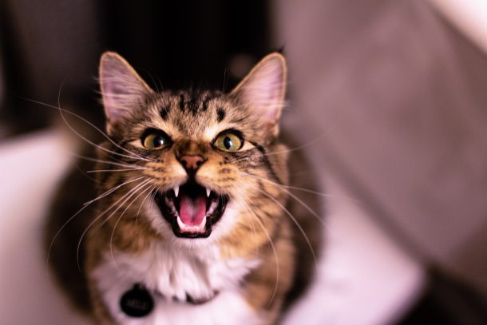

사자

아프리카와 인도에 서식하는 식육목(食肉目) 고양잇과 포유류. 북아프리카와 중동, 서아시아, 유럽, 아라비아에서도 과거엔 서식했었으나 유럽 지역에서는 기원전부터 씨가 말랐고, 인도를 제외한 아시아 지역에서도 19~20세기부터 하나둘씩 사라져갔다.[12] 북아프리카에서도 1920년 모로코에서 사살되어 이 지역들의 야생 사자는 멸종된 상태이다. 지금은 대부분이 남아프리카 사바나 일대에 서식하고 있고, 남서아프리카의 나미비아 사막[13]에 밀렵으로 멸종된 줄 알았던 사막 사자가 살아남아 있으며 사헬 지대에도 일부 살아남아 있다. 인도의 기르숲이란 곳에도 사자가 약간 남아있기는 하다. 현재도 개체수가 계속 감소 중인 사자기에, 나중엔 일부 보호구역에서 소수만이 남을것이다. 간지나는 비주얼과 강인한 사냥 능력으로 오랫동안 '백수의 왕'으로 불리우며 왕의 상징으로 여겨지는 등 인기를 누려온 동물이다. 동양권에서도 호랑이와 쌍벽으로 여겨지지만 호랑이와 달리 또한 모든 동물들 중에서 유독 사자(獅子)에게만 공자(孔子), 맹자(孟子)처럼 자(子)를 붙이는 걸 보면 사자의 위상을 알 수 있다. 용맹한 이미지와 달리 수컷 사자는 하루의 20시간을 그늘에서 쉬며 보낸다.[17] 이 때문에 게으른 이미지가 강하지만, 이는 재생산 효율의 문제이며 본래 사냥 실력은 뛰어나다 한다. 사실 사냥을 암사자들에게만 맡기는 수사자는 전체 성체 수사자 중에 일부에 불과하다. 대다수의 수사자는 떠돌이 수사자들인데 이들은 생존하기 위해 사냥을 직접 한다.[18] 실제로, 수사자의 경우 자기보다 체중이 4배나 나가는 성체 물소를 사냥하기도 하며, 1톤이 훨씬 넘는 성체 하마를 두 수사자가 협공하여 사냥한 경우도 있다. 물론 수사자라고 해도, 정면 대결이 아닌 기습으로 공격하는 것이다. [19]
정확히 말해, 수사자가 사냥을 안 하는 이유는 일단 사자는 낮이 아닌 밤에 본격적으로 활동을 개시하기 때문에 힘을 아끼기 위해서도 있지만 무엇보다 아프리카의 거친 자연에서는 바로 새끼의 생존이 가장 중요한 목적 중 하나인데, 여타 다른 고양이과 동물과는 달리 거의 유일하게 무리를 짓는 사자는 초식동물들처럼 새끼를 항상 이끌고 다닐 수도 없고 누군가는 새끼들을 지켜야 하기 때문이다. 그리고 이러한 새끼를 공격하는 동물은 다른 육식동물들이다.[20] 무리에 속하지 않은 수사자들도 새끼를 죽이는데 자신의 새끼를 임신시키기 위해서이다. 암사자들도 자신의 새끼를 지킨다고 저항하지만 수사자와 암사자는 체급차가 워낙 커서 한계가 있다. 이런 동물들에게서 새끼를 지키기 위해 사냥에 직접 나서서 힘을 소비하는 것을 자제하는 것이다. 그래선지 암컷들이 사냥을 해오면 가장 먼저 영양을 섭취한다. 불필요한 싸움을 피할 수 있기 때문에 이럴 때는 자신의 모습을 과시하는 갈기가 큰 도움이 된다.